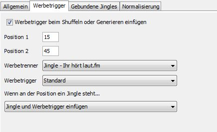

Playlists auf dem Server shuffeln

Playlist zum Shuffeln markieren
Du kannst in den Playlist-Eigenschaften festlegen ob Playlists auf dem Server geshuffelt werden sollen:
- Laß Dir die entsprechende Playlist anzeigen
- Klicke auf

- Wähle als Option für
- Wähle eines der möglichen
- - einfaches Umsortieren der Titel, nicht weiter konfigurierbar
- - Titelabfolge kann mittels Tags kontrolliert werden ("Stundenuhr")
- - Umsortierung mit vielen Konfigurationsmöglichkeiten
- - zerlegt eine Playlist mit vordefinierter Titelreihenfolge in Teile und wählt einen davon aus.
- Wenn Du oder gewählt hast wird aktiviert. Hier kannst Du weitere Einstellungen vornehmen
Optionen für "laut.fm - Tag-Pattern"

Bei diesem Verfahren gibst Du ein Muster (Pattern) für die Titelreihenfolge auf Basis von Tags vor. Angenommen Du hast Titel mit den Tags A, B und C versehen und gibst als Muster "A B A C" an: Dann würde zunächst ein mit A getaggter Titel verwendet, dann ein B-Titel gefolgt von einem A-Titel und einem C-Titel - danach wird das Muster wiederholt. In diesem Fall kämen A-Titel also häufiger vor als mit B oder C getaggte Titel.
Neben den Tags die Du selbst vergeben hast gibt es noch "song", "jingle" oder "moderation" als "magic Tags" die einfach alle Tracks des entsprechenden Typs selektieren. Wenn Du also z. B. nach jedem zweiten Titel ein Jingle platzieren möchtest setzt Du einfach "song song jingle" als Pattern.
Um einen Eintrag zu dem Muster hinzuzufügen klicke auf die letzte graue Box und wähle ein Tag aus. Um einen Eintrag zu ändern oder zu löschen klicke auf den Eintrag und wähle entweder ein neues Tag oder die leere Option aus.
Optionen für "Station Admin - Shuffle"

Für das Shuffeln mit dem Station Admin-Verfahren hast Du folgende Optionen:
- : Wenn nichts weiter angegeben wird wird maximal ein Track eines Artists pro Stunde Laufzeit verwendet. Möchtest Du weniger Titel pro Artist verwenden gib ein Limit an. Ein zu hohes Limit das zu einer Verletzung der GVL-Regeln führen würde wird automatisch beim Shuffeln verworfen.
- : Ist die Länge der Playlist kürzer als die Laufzeit gemäß Sendeplan werden intern mehrere Durchläufe gemacht bist die gewünschte Länge erreicht ist. Dabei werden jedoch wenn nichts weiter angegeben ist (fast) alle verfügbaren Titel verwendet - d. h. Gewichtungs- und Vermeidungsregeln greifen nicht oder kaum. Gibst Du eine Blocklänge an die deutlich kürzer ist als die Playlistlänge gibt es intern zwar mehr Durchläufe um die gewünschte Länge zu erreichen, es können dann aber pro Durchlauf Titel bevorzugt oder vermieden werden. Ist die Playlistlänge größer als die Laufzeit gemäß Sendeplan hat diese Einstellung keine Wirkung.
- Um zu vermeiden dass Titel die gerade erst gespielt wurden direkt wieder gespielt werden gib einen in Stunden an. Normalerweise werden die Tracks der letzten zwei Stunden mit geringerer Wahrscheinlichkeit verwendet - Du kannst den Zeitraum aber auf bis zu 24 Stunden erhöhen.
- : Optional kannst Du noch Regeln angeben um bestimmte Titel bei der Auswahl zu bevorzugen oder die Wahrscheinlichkeit für eine Auswahl zu reduzieren.
Das funktioniert wieder auf Basis von Titeltags: Wähle ein Tag und eine Häufigkeitsstufe für Titel die mit diesem Tag versehen sind. Entsprechende Titel können häufiger oder seltener gespielt werden als "normale" Titel - für beide Varianten stehen jeweils drei Stufen zur Verfügung.
- Optional kann die kurzfristige Wiederholung von (etwa verschiedene Versionen des gleichen Songs) unterbunden werden. Ausschlaggebend hierfür ist alleine der Titel des Tracks. Es wird nur auf Buchstaben und Ziffern geschaut - Komma, Klammern etc spielen beim Vergleich keine Rolle.
Umgang mit Jingles und Wortbeiträgen (nur für Verfahren "Station Admin - Shuffle")

Es gibt einige Konfigurationsmöglichkeiten die den Umgang mit Jingles und Wortbeiträgen steuern. Öffne dazu im -Menü und wähle .
Alle in einer Playlist enthaltenen Jingles werden normalerweise beim Shufflen gleichmäßig und in zufälliger Reihenfolge über die Playlist verteilt. Mit folgenden Optionen läßt sich das Verhalten ändern:
- sorgt dafür dass wenn eine Playlist mit einem Jingle beginnt dieses Jingle beim Shuffeln nicht verschoben wird. Dies ist sinnvoll für Show-Opener. Für Playlists die nicht mit einem Jingle beginnen hat diese Option keinerlei Wirkung.
- sorgt dafür dass in festen Zeitabständen Jingles eingestreut werden. Grundlage hierfür sind alle in der Playlist enthaltenen Jingles. Wurden alle Jingles einmal verwendet so wird als nächstes das zuerst verwendete Jingle erneut eingestreut - die Jingles wiederholen sich also. Sind in der Playlist so viele Jingles vorhanden dass eigentlich nicht alle Jingles eingestreut werden können werden die verbleibenden Jingles ans Ende der Playlist gehängt damit sie nicht verloren gehen.
- führt dazu dass Jingles in der Playlist an den Positionen stehen bleiben an denen sie sind. Bei Auswahl dieser Option werden die anderen Optionen deaktiviert dies nicht kombinierbar ist.
Für Wortbeiträge gibt es folgende Möglichkeiten:
- : Die Wortbeiträge werden wie normale Musiktitel zufällig verteilt.
- : Die Wortbeiträge bleiben an den Positionen an denen sie sind. Kommt also z. B. an 5. Stelle in einer Playlist ein Wortbeitrag so steht nach dem Shuffeln auch genau dieser Wortbeitrag wieder an 5. Stelle.
- : Die Wortbeiträge werden an die nachfolgenden Musiktitel gekoppelt: Werden beim Shuffeln Musiktitel verschoben so verschieben sich Wortbeiträge die vor diesen Titeln platziert sind entsprechend mit. Diese Option sollte gewählt werden wenn die Wortbeiträge Anmoderationen nachfolgender Titel beinhalten.
- : Die Wortbeiträge werden an die vorherigen Musiktitel gekoppelt: Werden beim Shuffeln Musiktitel verschoben so verschieben sich Wortbeiträge die nach diesen Titeln platziert sind entsprechend mit. Diese Option sollte gewählt werden wenn die Wortbeiträge Information vorhergehenden Titeln beinhalten.
Gebundene Jingles oder Wortbeiträge (nur für Verfahren "Station Admin - Shuffle")
Einen Sonderfall stellen Jingles oder Wortbeiträge dar die an bestimmte Titel gebunden werden sollen und entweder vor oder nach den entsprechenden Titeln platziert werden sollen. Entsprechende Regeln lassen sich über konfigurieren.
Die Regeln für gebundene Jingles können in Gruppen organisiert werden. Für jede Gruppe kann ein Mindestabstand in Minuten konfiguriert werden. Angenommen Du hast mehrere Jingles die jeweils an bestimmte Künstler gebunden werden, möchtest aber nicht dass zwei solcher Jingles innerhalb einer halben Stunde vorkommen: Dann organisierst Du die Regeln für diese Jingles in einer Gruppe und setzt den Abstand auf 30 Minuten.
Eine Regel legt für ein einzelnes Jingle oder einen Wortbeitrag fest an welche Titel es gebunden wird. Folgende Einstellungen sind verfügbar:
- Die zu der eine Regel gehört
- Die - ob das Jingle oder der Wortbeitrag vor oder nach den entsprechenden Titeln platziert werden soll
- Der des Filters der passende Titel festlegt - möglich sind Künstler, Künstler + Titel, Album oder Tag
- Der des Künstlers, Titels, Albums oder Tags an den das Jingle gebunden wird
- Der minimale zwischen zwei Platzierungen dieses Jingles oder Wortbeitrags in Minuten
Wenn Regeln für Künstler erstellt werden reicht ein Teil des Namens - d. h. eine Regel für "Foo" würde auch "Foo feat. Bar" akzeptieren. Für Alben und Künstler + Titel muss der gesamte Begriff passen - allerdings werden Groß-/Kleinschreibung sowie Leer- und Sonderzeichen ignoriert.
Wenn durch eine Regel ein gebundenes Jingle an eine Position eingefügt werde würde an der sich bereits ein Jingle befindet gibt es folgende Möglichkeiten:
- Es werden beide Jingles beibehalten - wenn also etwa ein Jingle vor einem Titel eingefügt werden soll und dort befindet sich schon ein Standardjingle wird das gebundene Jingle hinter das bestehende Jingle und vor den Titel eingefügt.
- Das gebundene Jingle wird nicht eingefügt.
- Das gebundene Jingle wird eingefügt und das Standardjingle wird entfernt. Hier gilt jedoch eine Ausnahme: Wenn das bestehende Jingle das erste Jingle der Playlist ist und als solches nicht verschoben werden soll bleibt es stehen.
Du musst die gebundenen Jingles in die Playlist einfügen da beim Shuffeln keine Tracks verwendet werden können die nicht schon in der Playlist enhalten sind. Es wird empfohlen die Playlist automatisch befüllen zu lassen.
Werbetrigger (nur für Verfahren "Station Admin - Shuffle")

Wenn du nichts weiter konfigurierst wird auf dem Server der Standard-Ad-Trigger zu Standardzeiten in Deine Playlist eingefügt. Möchtest Du die Zeiten selber kontrollieren, einen eigenen Trigger verwenden oder ein Jingle vor den Trigger setzen gehe in die Einstellungen zu und aktiviere .
Wähle die Zeiten aus zu denen Werbung gespielt werden soll. Die Positionen sind relativ zum Playlistanfang und wiederholen sich jede Stunde - d. h. bei 20 / 50 würde ein Trigger jeweils nach dem ersten Track platziert der 20 bzw 50 Minuten nach der vollen Stunde endet. Beachte bitte das in jeder vollen halben Stunde ein Trigger enthalten sein muß und das der Mindestabstand 20 Minuten betragen muß - sonst werden die Trigger auf dem Server verworfen.
Es wird empfohlen die Trigger nicht gegen Ende der vollen Stunde zu setzen weil sonst die Gefahr besteht dass ein lang laufender Ttiel das rechtzeitige Setzen des Triggers verhindert.
Wenn ein Jingle als Werbetrenner vor den Trigger platziert werden soll wähle unter ein Jingle aus.
Wähle unter ein Jingle das als Ad-Trigger verwendet werden soll. Normalerweise kann das Standardjingle verwendet werden. Möchtest Du dass ein bestimmtes Jingle nach der Werbung läft so verwende dieses Jingle als Ad-Trigger - es muss jedoch "START_AD_BREAK" als Artist oder Titel gesetzt sein. In dem Fall löst das Jingle die Werbung aus, nach der Werbung läuft ist dann das Jingle zu hören.
Du musst die gebundenen Jingles in die Playlist einfügen da beim Shuffeln keine Tracks verwendet werden können die nicht schon in der Playlist enhalten sind. Es wird empfohlen die Playlist automatisch befüllen zu lassen.
Beachte bei der Verwendung von eigenen Werbetrennern oder -triggern bitte dass nicht zwangsläufig Werbung gespielt wird. Es kann also passieren dass die Hörer nur die Jingles, aber keine Werbung hören.
Weiterhin kannst Du festlegen was passieren soll wenn an der Stelle wo ein Werbetrigger eingefügt werden soll schon ein Jingle steht:
- - beides wird eingefügt
- - Werbetrigger wird eingefügt, Jingle wird verworfen
- - Werbetrigger verschiebt sich nach hinten
Optionen für "Station Admin - Teilplaylist auswählen"
Das Verfahren "Teilplaylist auswählen" ist geeignet wenn Du mehrere vorgefertigte Playlists hast über die Du rotieren möchtest. In diesem Fall kannst Du diese (Teil)Playlists alle in einer großen Playlist ablegen und die Teile durch ein spezielles Jingle voneinander trennen. Vor dem Start wird dann einer dieser Teile ausgewählt und unverändert gespielt. Es werden hierbei werder Jingles noch Ad-Trigger eingefügt oder verändert.
Für die Auswahl einer Teilplaylist hast Du folgende Optionen:
- - hier kannst Du ein Jingle auswählen das die Playlist unterteilt. Es können nur Jingles ausgewählt werden die auch in der Playlist vorhanden sind. Empfohlen wird ein eigenes Marker-Jingle das sonst nicht verwendet wird. Gibst Du kein Trennerjingle an wird die Playlist anhand der im Sendeplan eingetragenen Länge unterteilt - d. h. wennn die Playlist 3 Stunden laufen soll wird sie intern Teilplaylists a 3 Stunden unterteilt.
- - legt fest ob das Jingle das zum Trennen der Teile verwendet wird auch gespielt werden soll
- - Entweder wird ein Teil völlig zufällig ausgewält oder es wird über die Teile rotiert. Wenn über die Teile rotiert werden soll musst Du angeben wie oft ein neuer Teil ausgewählt werden soll: Steht Deine Playlist z. B. einmal am Tag im Sendeplan wäre "jeden Tag einen anderen Teil auswählen" die passende Option. Spielst Du eine Playlist nur einmal pro Woche wählst Du "jede Woche einen anderen Teil auswählen"